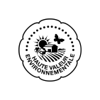
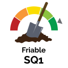
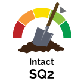
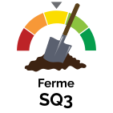
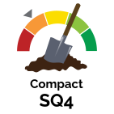
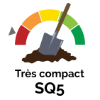
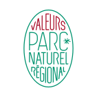

ACS.svg
ACS.svgAbricot.svg
Acariens.svg
 Adventices.svg
Adventices.svgAgriculture-de-precision.svg
Agriculture-bio.svg
Agriculture-conventionnelle.svg
Agriculture-hors-sol.svg
Agriculture-integree.svg
Agriculture-raisonnee.svg
Agrivoltaisme.svg
Agroforesterie-GC.svg
Agroforesterie-Maraichage.svg
Agroforesterie.svg
Ail.svg
Amande.svg
Amarante.svg
Aneth.svg
Apiculture.svg
Approche-redox.svg
Aquaponie.svg
Arachide.svg
Arboriculture.svg
Artichaut.svg
Association-de-culture.svg
Aubergine.svg
Auto-fertilite-du-sol.svg
Autonomie-en-MO.svg
Autonomie-en-proteines.svg
Aviculture-oeufs.svg
Aviculture.svg
Bacteries.svg
Bambou.svg
Banane.svg
Basilique.svg
Betterave.svg
Biodiversite.svg
 Biodynamie-Demeter.svg
Biodynamie-Demeter.svgBromes.svg
 Batiments-d'elevage.svg
Batiments-d'elevage.svgBenin.svg
Cacao.svg
Cahier-des-charges.svg
Canard.svg
Canne-a-sucre.svg
Carotte.svg
Cassis.svg
Cerise.svg
Chia.svg
Chou.svg
Choux.svg
Chataigne.svg
Ciboulette.svg
Circuit-court.svg
Citron.svg
Citronnelle.svg
Collaboration.svg
Colza.svg
Compaction.svg
Concombre.svg
 Conventionnelle.svg
Conventionnelle.svgCoriandre.svg
Corossol.svg
Courge.svg
Couverts-permanents.svg
Couverts-vegetaux.svg
 Culture-sous-abri.svg
Culture-sous-abri.svgCultures-fourrageres.svg
Cultures-tropicales.svg
Cereales.svg
Departement-971.svg
Departement-972.svg
Departement-973.svg
Departement-974.svg
Departement-976.svg
Desherbage-chimique.svg
Desherbage-manuel.svg
Desherbage-par-couverture.svg
Desherbage-thermique.svg
Desherbage-electrique.svg
Desherbage.svg
ETA.svg
Ecophyto.svg
Elevage-et-agroforesterie.svg
Elevage-bovin.svg
Elevage-caprin.svg
Elevage-equin.svg
Elevage-ovin.svg
Elevage-porcin.svg
 Endive.svg
Endive.svgEpinards.svg
Fenouil.svg
Fenugrec.svg
Fertilisation-ciblee.svg
Figue.svg
Financement.svg
Fiscalite.svg
Flandre.svg
Fraise.svg
Framboise.svg
Fruits.svg
Feverole.svg
Gestion-de-la-fertilite.svg
Gestion-des-couverts-vegetaux.svg
Ghana.svg
Gombo.svg
Goyave.svg
Grandes-cultures.svg
Grass.svg
Grenade.svg
Groseillier.svg
HVE.svg
 Haricot.svg
Haricot.svgHibiscus.svg
Horticulture-PPAM.svg
Hydroponie.svg
Heliciculture.svg
Icone-categorie-Arbre.svg
Icone-categorie-Auxiliaires.svg
Icone-categorie-Bioagresseur.svg
Icone-categorie-Cultures.svg
Icone-categorie-Cepage.svg
Icone-categorie-Formation.svg
Icone-categorie-Label.svg
Icone-categorie-Livre.svg
Icone-categorie-Machines.svg
Icone-categorie-OAD.svg
Icone-categorie-Pratiques.svg
 Icone-categorie-Retours-d'experience.svg
Icone-categorie-Retours-d'experience.svgIcone-categorie-objectif.svg
Icone-categorie-Intrant.svg
Igname.svg
Insectes.svg
Installation.svg
Irrigation-en-arboriculture.svg
 Irrigation-en-maraichage.svg
Irrigation-en-maraichage.svgIrrigation.svg
Itineraire-des-poules.svg
Karite.svg
Labels.svg
Labour.svg
Laitue.svg
Lapin.svg
Lentille.svg
Les-cepages.svg
Lin.svg
Luzerne.svg
 Maladies-cryptogamiques.svg
Maladies-cryptogamiques.svgMammiferes.svg
Mangue.svg
Manioc.svg
Maraichage.svg
 Maraichage-bio-intensif.svg
Maraichage-bio-intensif.svgMaraichage.svg
Mais.svg
Melon.svg
Millet.svg
 Miscanthus.svg
Miscanthus.svgMollusques.svg
More.svg
Moringa.svg
Moutarde.svg
Mycosylviculture.svg
Mecanisation.svg
Meteil.svg
Methanisation.svg
Navet.svg
Niebe.svg
Noix-de-cajou.svg
Noix-de-coco.svg
Noix.svg
Non-irrigue.svg
Non-labour.svg
Nutrition-des-bovins.svg
Nutrition-des-brebis-laitieres.svg
Nutrition-des-poules.svg
Nematodes.svg
Nere.svg
Oignon.svg
Oignon-1.svg
Oiseaux.svg
Olives.svg
Orange.svg
 Organisation-du-travail.svg
Organisation-du-travail.svgOther.svg
PBI.svg
PFI.svg
PH-5.svg
PH-6.5.svg
PH-7.5.svg
PH-7.svg
Pamplemousse.svg
Papaye.svg
Partenariat.svg
Pasteque.svg
Patate-douce.svg
Permaculture.svg
Petit-pois.svg
Piment.svg
Pistache.svg
Planification.svg
Plantation-en-arboriculture.svg
Plantation-en-viticulture.svg
Poire.svg
Poireau.svg
Pois-chiche.svg
Poivron.svg
Polyculture-elevage.svg
Polyculture.svg
Pomme-cannelle.svg
Pomme-de-terre.svg
Pomme.svg
Protection-des-cultures.svg
Protection-en-arboriculture.svg
Protection-en-viticulture.svg
Protection-integree-des-cultures-PIC.svg
Prune.svg
Pre-verger.svg
Paturage-tournant-dynamique.svg
Peche.svg
Quinoa.svg
Radis.svg
Ray-grass.svg
Remise-en-vie-des-sols.svg
Reproduction-des-bovins.svg
 Reproduction-des-brebis-lait.svg
Reproduction-des-brebis-lait.svgReproduction-des-caprins.svg
Ressources-humaines.svg
Riz.svg
Romarin.svg
Rongeurs.svg
Rotations.svg
Reduction-des-charges.svg
SAU.svg
SDSC.svg
SQ1.svg
SQ2.svg
SQ3.svg
SQ4.svg
SQ5.svg
Sante-des-bovins.svg
Sante-des-poules.svg
Sante-des-elevages-ovins.svg
Sarrasin.svg
Semis-Direct.svg
Silphie.svg
Soja.svg
Sorgho.svg
 Strategie-d'investissements.svg
Strategie-d'investissements.svg Sylviculture.svg
Sylviculture.svgSylvopastoralisme.svg
Systemes-et-choix-des-especes.svg
Senegal.svg
TCS.svg
Taille.svg
Teck.svg
Tomate.svg
Tournesol.svg
Transformation-a-la-ferme-des-poulets-de-chair.svg
Transformation-a-la-ferme-des-produits-du-lait-de-chevre.svg
Transformation-a-la-ferme-des-produits-laitiers.svg
Transformation-a-la-ferme-en-elevage-ovin-viande.svg
Trefle.svg
Type-Sol.svg
UTH.svg
Valeurs-Parc.svg
Virus.svg
Viticulture.svg
Vitiforesterie.svg
Wallonie.svg
Zone-vulnerable.svg
productivite.svg
Elevage-bovin-viande.svg
Elevage-bovin.svg
Elevage.svg